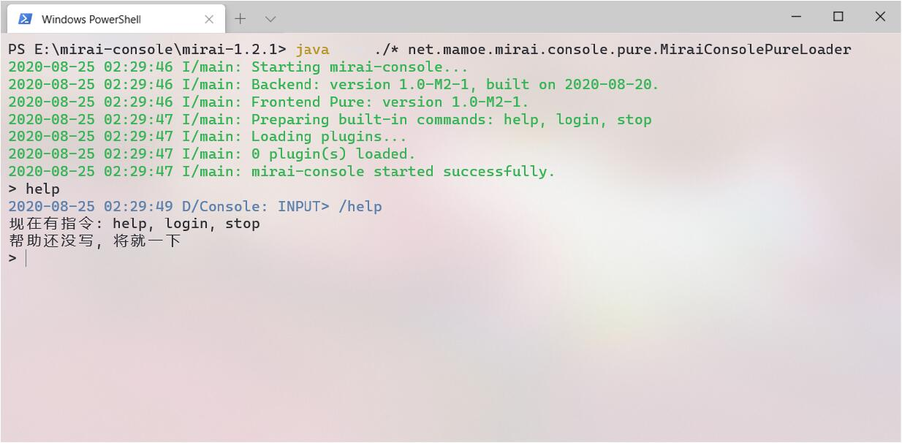
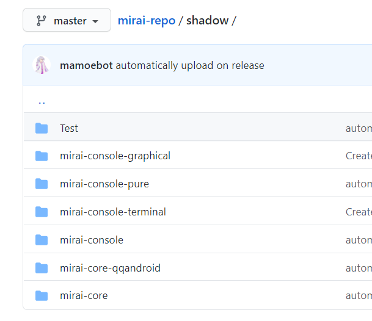
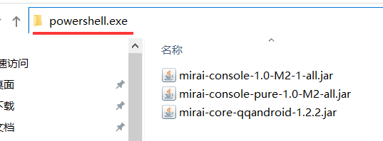
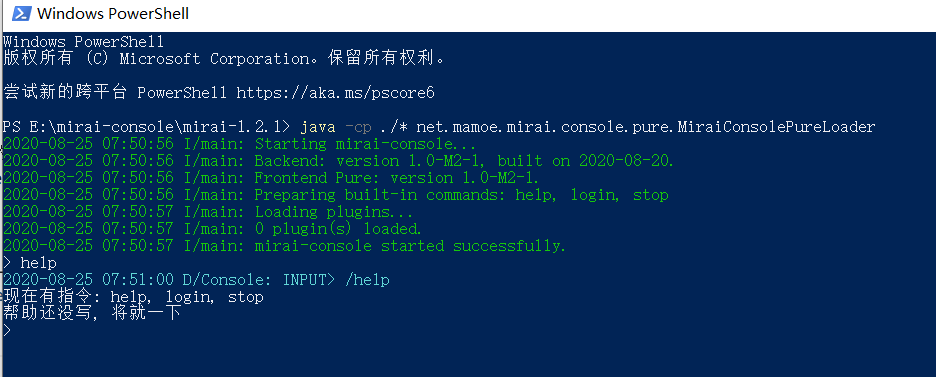
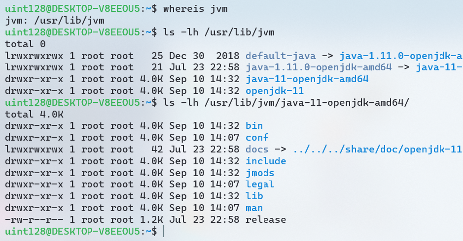

<!DOCTYPE html>
<html>
<head><meta name="generator" content="Hexo 3.9.0">
  <!-- hexo-inject:begin --><!-- hexo-inject:end --><meta charset="utf-8">
  <meta http-equiv="X-UA-Compatible" content="IE=edge">
  
  <title>开源Android QQ协议库mirai使用教程(2020-08版本) | uint128&#39;s Blog</title>
  <meta name="description" content="uint128&#39;s blog">
  <meta name="keywords" content="uint128,uint128&#39;s blog,uint128.com">
  <meta name="HandheldFriendly" content="True">
  <meta name="apple-mobile-web-app-capable" content="yes">
  <link rel="shortcut icon" href="/">
  <link rel="alternate" href="/atom.xml" title="uint128's Blog">
  <meta name="viewport" content="width=device-width, initial-scale=1, maximum-scale=1">
  <meta name="description" content="简单的入门教程, 适合无基础小白。因水平有限，本文内容可能会有错误，还请指正。">
<meta name="keywords" content="uint128,uint128&#39;s blog,uint128.com">
<meta property="og:type" content="article">
<meta property="og:title" content="开源Android QQ协议库mirai使用教程(2020-08版本)">
<meta property="og:url" content="https://uint128.com/2020/08/25/开源Android-QQ协议库mirai使用教程-2020-08版本/index.html">
<meta property="og:site_name" content="uint128&#39;s Blog">
<meta property="og:description" content="简单的入门教程, 适合无基础小白。因水平有限，本文内容可能会有错误，还请指正。">
<meta property="og:locale" content="zh-cn">
<meta property="og:image" content="https://uint128.com/2020/08/25/开源Android-QQ协议库mirai使用教程-2020-08版本/pic1.jpg">
<meta property="og:image" content="https://uint128.com/2020/08/25/开源Android-QQ协议库mirai使用教程-2020-08版本/installing_jre_1_8.jpg">
<meta property="og:image" content="https://uint128.com/2020/08/25/开源Android-QQ协议库mirai使用教程-2020-08版本/java_version.png">
<meta property="og:image" content="https://uint128.com/2020/08/25/开源Android-QQ协议库mirai使用教程-2020-08版本/pic4.png">
<meta property="og:image" content="https://uint128.com/2020/08/25/开源Android-QQ协议库mirai使用教程-2020-08版本/execute_mirai_console_1.png">
<meta property="og:image" content="https://uint128.com/2020/08/25/开源Android-QQ协议库mirai使用教程-2020-08版本/execute_mirai_console_2.png">
<meta property="og:image" content="https://uint128.com/2020/08/25/开源Android-QQ协议库mirai使用教程-2020-08版本/pic5.png">
<meta property="og:updated_time" content="2020-09-16T12:38:02.251Z">
<meta name="twitter:card" content="summary">
<meta name="twitter:title" content="开源Android QQ协议库mirai使用教程(2020-08版本)">
<meta name="twitter:description" content="简单的入门教程, 适合无基础小白。因水平有限，本文内容可能会有错误，还请指正。">
<meta name="twitter:image" content="https://uint128.com/2020/08/25/开源Android-QQ协议库mirai使用教程-2020-08版本/pic1.jpg">
    
  <link href="https://fonts.googleapis.com/css?family=Inconsolata|Titillium+Web" rel="stylesheet">
  <link href="https://fonts.googleapis.com/css?family=Roboto+Mono" rel="stylesheet">
  <link href="//cdnjs.cloudflare.com/ajax/libs/node-waves/0.7.5/waves.min.css" rel="stylesheet">
  <link rel="stylesheet" href="/style.css">
  <script>
    function setLoadingBarProgress(num) {
      document.getElementById('loading-bar').style.width=num+"%";
    }
  </script>
  <script src="/js/md5.js"></script>
<link rel="alternate" href="/atom.xml" title="uint128's Blog" type="application/atom+xml"><!-- hexo-inject:begin --><!-- hexo-inject:end -->
</head>
</html>
<body>
  <!-- hexo-inject:begin --><!-- hexo-inject:end --><div id="loading-bar-wrapper">
  <div id="loading-bar"></div>
</div>


  <script>setLoadingBarProgress(20)</script> 
  <header class="l_header">
	<div class='wrapper'>
		<div class="nav-main container container--flex">
			<a class="logo flat-box" href='/' >
				uint128's Blog
			</a>
			<div class='menu'>
				<ul class='h-list'>
					
						<li>
							<a class='flat-box nav-home' href='/'>
								Home
							</a>
						</li>
					
						<li>
							<a class='flat-box nav-archives' href='/archives'>
								Archives
							</a>
						</li>
					
						<li>
							<a class='flat-box nav-about' href='/about'>
								About
							</a>
						</li>
					
				</ul>
				<div class='underline'></div>
			</div>
			
				<div class="m_search">
					<form name="searchform" class="form u-search-form">
						<input type="text" class="input u-search-input" placeholder="Search" />
						<span class="icon icon-search"></span>
					</form>
				</div>
			
			<ul class='switcher h-list'>
				
					<li class='s-search'><a href='javascript:void(0)'><span class="icon icon-search flat-box"></span></a></li>
				
				<li class='s-menu'><a href='javascript:void(0)'><span class="icon icon-menu flat-box"></span></a></li>
			</ul>
		</div>
		
		<div class='nav-sub container container--flex'>
			<a class="logo" class="flat-box" href='javascript:void(0)'>
				Word of Forks
			</a>

			<ul class='switcher h-list'>
				<li class='s-comment'><a href='javascript:void(0)'><span class="icon icon-chat_bubble_outline flat-box"></span></a></li>
				<li class='s-top'><a href='javascript:void(0)'><span class="icon icon-arrow_upward flat-box"></span></a></li>
				<li class='s-toc'><a href='javascript:void(0)'><span class="icon icon-format_list_numbered flat-box"></span></a></li>
			</ul>
		</div>
	</div>
</header>
<aside class="menu-phone">
	<nav>
		
			<a href="/" class="nav-home nav">
				Home
			</a>
		
			<a href="/archives" class="nav-archives nav">
				Archives
			</a>
		
			<a href="/about" class="nav-about nav">
				About
			</a>
		
	</nav>
</aside>

    <script>setLoadingBarProgress(40);</script>
  <div class="l_body">
    <div class='container clearfix'>
      <div class='l_main'>
        <article id="post-开源Android-QQ协议库mirai使用教程-2020-08版本"
  class="post white-box article-type-post"
  itemscope itemprop="blogPost">
	<section class='meta'>
	<h2 class="title">
  	<a href="/2020/08/25/开源Android-QQ协议库mirai使用教程-2020-08版本/">
    	开源Android QQ协议库mirai使用教程(2020-08版本)
    </a>
  </h2>
	<time>
	  8月 25, 2020
	</time>
	
	</section>
	
		<section class="toc-wrapper"><ol class="toc"><li class="toc-item toc-level-1"><a class="toc-link" href="#前言"><span class="toc-number">1.</span> <span class="toc-text">前言</span></a></li><li class="toc-item toc-level-1"><a class="toc-link" href="#mirai-项目简介"><span class="toc-number">2.</span> <span class="toc-text">mirai 项目简介</span></a><ol class="toc-child"><li class="toc-item toc-level-2"><a class="toc-link" href="#mirai与mirai-console"><span class="toc-number">2.1.</span> <span class="toc-text">mirai与mirai-console</span></a></li></ol></li><li class="toc-item toc-level-1"><a class="toc-link" href="#开始使用-mirai-console"><span class="toc-number">3.</span> <span class="toc-text">开始使用 mirai-console</span></a><ol class="toc-child"><li class="toc-item toc-level-2"><a class="toc-link" href="#使用前的注意事项"><span class="toc-number">3.1.</span> <span class="toc-text">使用前的注意事项</span></a></li><li class="toc-item toc-level-2"><a class="toc-link" href="#在-windows-上使用-mirai-console"><span class="toc-number">3.2.</span> <span class="toc-text">在 windows 上使用 mirai-console</span></a><ol class="toc-child"><li class="toc-item toc-level-3"><a class="toc-link" href="#准备运行环境"><span class="toc-number">3.2.1.</span> <span class="toc-text">准备运行环境</span></a></li><li class="toc-item toc-level-3"><a class="toc-link" href="#下载-mirai-console"><span class="toc-number">3.2.2.</span> <span class="toc-text">下载 mirai-console</span></a></li><li class="toc-item toc-level-3"><a class="toc-link" href="#下载-mirai-core-qqandroid"><span class="toc-number">3.2.3.</span> <span class="toc-text">下载 mirai-core-qqandroid</span></a></li><li class="toc-item toc-level-3"><a class="toc-link" href="#运行-mirai-console"><span class="toc-number">3.2.4.</span> <span class="toc-text">运行 mirai-console</span></a></li></ol></li><li class="toc-item toc-level-2"><a class="toc-link" href="#在-Linux-上使用-mirai-console"><span class="toc-number">3.3.</span> <span class="toc-text">在 Linux 上使用 mirai-console</span></a><ol class="toc-child"><li class="toc-item toc-level-3"><a class="toc-link" href="#准备运行环境-1"><span class="toc-number">3.3.1.</span> <span class="toc-text">准备运行环境</span></a></li><li class="toc-item toc-level-3"><a class="toc-link" href="#下载-mirai-console-与-mirai-core"><span class="toc-number">3.3.2.</span> <span class="toc-text">下载 mirai-console 与 mirai-core</span></a></li><li class="toc-item toc-level-3"><a class="toc-link" href="#运行-mirai-console-1"><span class="toc-number">3.3.3.</span> <span class="toc-text">运行 mirai-console</span></a></li><li class="toc-item toc-level-3"><a class="toc-link" href="#让-mirai-在服务器中持续运行"><span class="toc-number">3.3.4.</span> <span class="toc-text">让 mirai 在服务器中持续运行</span></a></li></ol></li></ol></li><li class="toc-item toc-level-1"><a class="toc-link" href="#插件推荐：mirai-native-与-mirai-api-http"><span class="toc-number">4.</span> <span class="toc-text">插件推荐：mirai-native 与 mirai-api-http</span></a></li></ol></section>
	
	<section class="article typo">
  	<div class="article-entry" itemprop="articleBody">
    	<p>简单的入门教程, 适合无基础小白。因水平有限，本文内容可能会有错误，还请指正。<br><a id="more"></a></p>
<h1 id="前言"><a href="#前言" class="headerlink" title="前言"></a>前言</h1><p>其实之前已经写过一篇类似的<a href="https://uint128.com/2020/04/18/%E5%BC%80%E6%BA%90%E5%AE%89%E5%8D%93QQ%E5%8D%8F%E8%AE%AE%E5%BA%93-mirai-%E4%BD%BF%E7%94%A8%E6%95%99%E7%A8%8B/">mirai使用教程</a>。<br>但是mirai（以及相关作品）经过几个版本的迭代，已经有了较大的变化，旧文章中的许多内容已经不再适用，故有了这篇新的文章。</p>
<h1 id="mirai-项目简介"><a href="#mirai-项目简介" class="headerlink" title="mirai 项目简介"></a>mirai 项目简介</h1><h2 id="mirai与mirai-console"><a href="#mirai与mirai-console" class="headerlink" title="mirai与mirai-console"></a>mirai与mirai-console</h2><p>&emsp;&emsp;Mirai 是一个在全平台下运行, 提供 QQ Android 和 TIM PC 协议支持的高效率机器人框架(官方定义)。实际上因为一些原因,  TIM PC 协议停止更新了。目前功能最齐全, 运行最稳定的是 QQ Android 协议。(mirai 项目地址: <a href="https://github.com/mamoe/mirai" target="_blank" rel="noopener">Github</a> )</p>
<p>&emsp;&emsp;Mirai 是由 Kotlin 语言编写的协议库, 提供使用 QQ Android 协议的一些 API。但是 mirai 本身<strong>不是</strong>一个 <strong>“QQ机器人”</strong> 程序, 而是一个库。与机器人软件/框架 (例如酷Q) 对应的应该是 mirai 官方的衍生项目 <strong>mirai-console</strong>。(mirai-console 项目地址: <a href="https://github.com/mamoe/mirai-console" target="_blank" rel="noopener">Github</a> )</p>
<p></p>
<p><strong><center>图 1 mirai-console 运行时截图(测试版)</center></strong></p>
<p>&emsp;&emsp;<strong>mirai-console</strong> 提供了插件系统, 支持安装 由 Java/Kotlin 编写的 <strong>mirai-console</strong> 插件。如果安装了 <strong>mirai-native</strong> 插件, 还可以支持酷Q的插件。由于酷Q插件相关的机制没有开放，因此无法直接加载cpk类型的插件, 需要将酷Q的插件重新编译为 dll 才能给 <strong>mirai-native</strong> 使用。( <strong>mirai-native</strong> 项目地址: <a href="https://github.com/iTXTech/mirai-native" target="_blank" rel="noopener">Github</a> )。安装 <strong>mirai-api-http</strong> 插件, 则可以使用基于 mirai-api-http 开发的插件。( <strong>mirai-api-http</strong> 项目地址: <a href="https://github.com/mamoe/mirai-api-http" target="_blank" rel="noopener">Github</a> )</p>
<h1 id="开始使用-mirai-console"><a href="#开始使用-mirai-console" class="headerlink" title="开始使用 mirai-console"></a>开始使用 mirai-console</h1><h2 id="使用前的注意事项"><a href="#使用前的注意事项" class="headerlink" title="使用前的注意事项"></a>使用前的注意事项</h2><p>下面是使用之前<strong>必须阅读</strong>的声明(源自mirai的<a href="https://github.com/mamoe/mirai#%E5%A3%B0%E6%98%8E" target="_blank" rel="noopener">README.md</a>)：</p>
<blockquote>
<p>一切开发旨在学习，请勿用于非法用途</p>
<ul>
<li>mirai 是完全免费且开放源代码的软件，仅供学习和娱乐用途使用</li>
<li>mirai 不会通过任何方式强制收取费用，或对使用者提出物质条件</li>
<li>mirai 由整个开源社区维护，并不是属于某个个体的作品，所有贡献者都享有其作品的著作权。</li>
</ul>
<p>Mirai 在各个平台均没有任何所谓官方交流群或论坛, 请不要轻信任何所谓学习, 交流群, 不造谣不传谣不信谣从我做起</p>
</blockquote>
<p>如果你是开发者，你还需要了解 mirai 的<a href="https://github.com/mamoe/mirai#%E8%AE%B8%E5%8F%AF%E8%AF%81" target="_blank" rel="noopener">开源协议</a>。mirai 采用 <strong>AGPLv3</strong>协议开源。按照这个协议，任何与 mirai 有<strong>直接</strong>或<strong>间接</strong>关系的程序，都应该<strong>采用相同的协议开源</strong>。比如，开发基于 mirai-console 的插件会直接引用 mirai 相关的库，因此这个插件需要采用 <strong>AGPLv3</strong> 协议<strong>开源</strong>。此外，开发基于 mirai-api-http 的插件会间接使用到 mirai，因此这个插件也需要采用 <strong>AGPLv3</strong> 协议<strong>开源</strong>。</p>
<h2 id="在-windows-上使用-mirai-console"><a href="#在-windows-上使用-mirai-console" class="headerlink" title="在 windows 上使用 mirai-console"></a>在 windows 上使用 mirai-console</h2><h3 id="准备运行环境"><a href="#准备运行环境" class="headerlink" title="准备运行环境"></a>准备运行环境</h3><p>&emsp;&emsp;运行 <strong>mirai-console</strong> 需要安装 Java 运行环境。安装 <strong>jre1.8</strong> (或 <strong>jdk8</strong>) 以及更高版本都可以。(jre1.8 安装包下载地址: <a href="https://www.baidu.com/s?wd=jre%201.8" target="_blank" rel="noopener">baidu</a> ; jdk8安装包下载地址: <a href="https://www.baidu.com/s?wd=jdk%201.8" target="_blank" rel="noopener">baidu</a> )</p>
<p></p>
<p><strong><center>图 2 安装 Java 运行环境(jre)截图</center></strong></p>
<p>&emsp;&emsp;安装完成后, 重启计算机。打开 <strong>Powershell</strong>, 输入 <code>java -version</code> 或者 <code>java --version</code> 然后回车, 查看是否正确安装 Java。正确安装 Java 并执行上面的指令后, 其结果应该如 <strong>图 3</strong> 所示。</p>
<blockquote>
<p>打开 Powershell 的方法: 同时按下键盘上的 <strong>Win</strong> 按键 (印着 windows 图标的按键) 和 <strong>字母 R</strong> 按键, 这会启动 “运行” 程序。输入 <code>powershell</code> 然后点击确定, 就可以打开 Powershell。</p>
</blockquote>
<p></p>
<p><strong><center>图 3 执行 java -version 截图</center></strong></p>
<h3 id="下载-mirai-console"><a href="#下载-mirai-console" class="headerlink" title="下载 mirai-console"></a>下载 mirai-console</h3><p>mirai-console 包含两个部分：前端和后端。后端是 mirai-console 的核心部分，包含插件系统、指令系统、配置系统等。前端则是和后端进行交互的部分。比如在控制台中进行交互，可以使用 Pure 前端；需要图形界面的交互可以使用 Graphical 前端；Unix 终端界面可以使用 Terminal 前端。</p>
<p>mirai-console 前端和后端可以在 <a href="https://github.com/project-mirai/mirai-repo/tree/master/shadow" target="_blank" rel="noopener">mirai-repo</a> 中下载。</p>
<p>mirai-console 的后端位于 mirai-console 文件夹内。mirai-console 的 Pure 前端位于 <em>mirai-console-pure</em> 文件夹下。(<strong>图 4</strong>)</p>
<h3 id="下载-mirai-core-qqandroid"><a href="#下载-mirai-core-qqandroid" class="headerlink" title="下载 mirai-core-qqandroid"></a>下载 mirai-core-qqandroid</h3><p>mirai-core-qqandroid 位于 mirai-repo 的 <em>mirai-core-qqandroid</em> 文件夹下，它是 mirai 的核心组件，mirai-console 需要它才能正常工作。(<strong>图 4</strong>)</p>
<p></p>
<p><strong><center>图 4 mirai-repo 的内容</center></strong></p>
<h3 id="运行-mirai-console"><a href="#运行-mirai-console" class="headerlink" title="运行 mirai-console"></a>运行 mirai-console</h3><p>将 mirai-console 的前端、后端以及 mirai-core-qqandroid 共三个文件放在同一个目录下。在资源管理器的地址栏中输入 <code>powershell.exe</code> 然后回车, 这会在当前目录启动 Powershell。(如 <strong>图 5</strong>)</p>
<p></p>
<p><strong><center>图 5 准备执行 mirai-console</center></strong></p>
<p>&emsp;&emsp;启动 Powershell 后, 输入以下指令并回车启动 mirai-console。(<strong>图 6</strong>)</p>
<figure class="highlight bash"><table><tr><td class="gutter"><pre><span class="line">1</span><br></pre></td><td class="code"><pre><span class="line">java -cp ./* net.mamoe.mirai.console.pure.MiraiConsolePureLoader</span><br></pre></td></tr></table></figure>
<p></p>
<p><strong><center>图 6 mirai-console 运行时截图</center></strong></p>
<h2 id="在-Linux-上使用-mirai-console"><a href="#在-Linux-上使用-mirai-console" class="headerlink" title="在 Linux 上使用 mirai-console"></a>在 Linux 上使用 mirai-console</h2><p>以下内容在 WSL 中进行，以 Debian 10 为例。</p>
<h3 id="准备运行环境-1"><a href="#准备运行环境-1" class="headerlink" title="准备运行环境"></a>准备运行环境</h3><p>执行以下命令安装个 openjdk 就好了：</p>
<figure class="highlight bash"><table><tr><td class="gutter"><pre><span class="line">1</span><br><span class="line">2</span><br></pre></td><td class="code"><pre><span class="line">sudo apt-get update</span><br><span class="line">sudo apt-get install default-jdk</span><br></pre></td></tr></table></figure>
<h3 id="下载-mirai-console-与-mirai-core"><a href="#下载-mirai-console-与-mirai-core" class="headerlink" title="下载 mirai-console 与 mirai-core"></a>下载 mirai-console 与 mirai-core</h3><p>可以用 curl 或者 wget，也可以在windows系统下载好之后用 scp 指令传输到 Linux。</p>
<h3 id="运行-mirai-console-1"><a href="#运行-mirai-console-1" class="headerlink" title="运行 mirai-console"></a>运行 mirai-console</h3><p>执行以下指令启动 mirai-console。</p>
<figure class="highlight bash"><table><tr><td class="gutter"><pre><span class="line">1</span><br></pre></td><td class="code"><pre><span class="line">java -cp ./* net.mamoe.mirai.console.pure.MiraiConsolePureLoader</span><br></pre></td></tr></table></figure>
<p>如果出现 <code>Error: Could not find or load main class</code> 的错误，尝试以下解决方法：</p>
<p>首先找到 <code>/usr/lib/jvm/java-XXX-openjdk-amd64/</code> 目录的路径</p>
<p>可以执行以下指令寻找：</p>
<figure class="highlight bash"><table><tr><td class="gutter"><pre><span class="line">1</span><br></pre></td><td class="code"><pre><span class="line">whereis jvm</span><br></pre></td></tr></table></figure>
<p>如图所示，在我的 Linux 上，该目录的路径是 <code>/usr/lib/jvm/java-11-openjdk-amd64/</code></p>
<p></p>
<p>然后，根据你自己的情况，修改并执行以下指令，启动mirai。</p>
<figure class="highlight bash"><table><tr><td class="gutter"><pre><span class="line">1</span><br></pre></td><td class="code"><pre><span class="line">java -cp /usr/lib/jvm/java-11-openjdk-amd64/lib:./* net.mamoe.mirai.console.pure.MiraiConsolePureLoader</span><br></pre></td></tr></table></figure>
<h3 id="让-mirai-在服务器中持续运行"><a href="#让-mirai-在服务器中持续运行" class="headerlink" title="让 mirai 在服务器中持续运行"></a>让 mirai 在服务器中持续运行</h3><p>断开 ssh 链接时，会把在会话期间运行的程序一起结束掉。要让 mirai-console 和其他插件在服务器中持续运行，推荐使用 screen 程序。</p>
<p>下面以启动 mirai-console 为例简单介绍 screen 的用法。</p>
<p>执行以下指令安装 screen：</p>
<figure class="highlight bash"><table><tr><td class="gutter"><pre><span class="line">1</span><br></pre></td><td class="code"><pre><span class="line">sudo apt-get install screen</span><br></pre></td></tr></table></figure>
<p>创建一个屏幕（SCREEN_NAME是屏幕的名称，可以改成合适的名字）：</p>
<figure class="highlight bash"><table><tr><td class="gutter"><pre><span class="line">1</span><br></pre></td><td class="code"><pre><span class="line">screen -S SCREEN_NAME</span><br></pre></td></tr></table></figure>
<p>然后在新创建的屏幕启动 mirai-console。</p>
<p>要断开屏幕连接，先按下组合键 Ctrl+A 再按下字母 D。</p>
<p>之后再关闭终端，就不会把 mirai-console 结束掉了。</p>
<p>要重新连接之前的屏幕，执行以下指令：</p>
<figure class="highlight bash"><table><tr><td class="gutter"><pre><span class="line">1</span><br></pre></td><td class="code"><pre><span class="line">screen -r SCREEN_NAME</span><br></pre></td></tr></table></figure>
<p>如果忘记了有哪些屏幕，可以执行以下指令列出所有屏幕：</p>
<figure class="highlight bash"><table><tr><td class="gutter"><pre><span class="line">1</span><br></pre></td><td class="code"><pre><span class="line">screen -ls</span><br></pre></td></tr></table></figure>
<h1 id="插件推荐：mirai-native-与-mirai-api-http"><a href="#插件推荐：mirai-native-与-mirai-api-http" class="headerlink" title="插件推荐：mirai-native 与 mirai-api-http"></a>插件推荐：mirai-native 与 mirai-api-http</h1><p><a href="https://github.com/iTXTech/mirai-native" target="_blank" rel="noopener">mirai-native</a> 插件提供了和酷Q类似的插件API，如果有dll版本的酷Q插件，可以直接使用（cpk文件不行），该插件只能用于 windows，java x86 环境。</p>
<p><a href="https://github.com/project-mirai/mirai-api-http" target="_blank" rel="noopener">mirai-api-http</a> 插件提供了一系列HTTP API，其他语言可以很方便地使用HTTP API使用mirai。现在已经有很多基于HTTP API的SDK，因此即使不擅长 kotlin/java 语言也可以开发 mirai 机器人。</p>
<p>// 未完待续…</p>

  	</div>
	  
		
	
		<div class="art-item-footer">
				
					<span class="art-item-left"><i class="icon icon-chevron-thin-left"></i>prev：<a href="/2020/09/29/2020深圳杯数模C题简析-无线可充电传感器网络充电路线规划/" rel="prev"  title="2020深圳杯数模C题简析:无线可充电传感器网络充电路线规划">
						2020深圳杯数模C题简析:无线可充电传感器网络充电路线规划 
					</a></span>
				
				
					<span class="art-item-right">next：<a href="/2020/08/21/青果教务系统APP网络协议加密算法分析/" rel="next"  title="青果教务系统APP网络协议加密算法分析">
						青果教务系统APP网络协议加密算法分析
					</a><i class="icon icon-chevron-thin-right"></i></span>
				
		</div>
	
	</section>


	

</article>


	<div id="gitalk-container"></div>
	<link rel="stylesheet" href="https://unpkg.com/gitalk/dist/gitalk.css">

<script src="https://unpkg.com/gitalk/dist/gitalk.min.js"></script>

 <script type="text/javascript">
      var gitalk = new Gitalk({
        clientID: '53e3c578fcb7b7b1a4da',
        clientSecret: '74433ee77d6e13fd635b82add519e143ac791726',
        repo: 'cyanray.github.io',
        owner: 'cyanray',
        admin: ['cyanray'],
        id: CryptoJS.MD5(location.pathname).toString(),
        labels: ['Gitalk'],
        perPage: 15,
        pagerDirection: 'last',
        createIssueManually: true,
        distractionFreeMode: false
      })

      gitalk.render('gitalk-container')
 </script>


<script>
	window.subData = {
		title: '开源Android QQ协议库mirai使用教程(2020-08版本)',
		tools: true
	}
</script>

      </div>
      <aside class='l_side'>
        
  <section class='m_widget about'>
    
            <div class='header'>
                uint128.com
            </div>
            <div class='content'>
                <div class='desc'>uint128, unsigned int.<br>Uint128 Is Not a Type with 128 bits.</div>
            </div>
</section>

  <section class='m_widget links'>
<div class='header'>Links</div>
<div class='content'>
    <ul class="entry">
    
        <li><a class="flat-box" target="_blank" href="https://github.com/cyanray">
            <div class='name'>My Github</div>
        </a></li>
    
        <li><a class="flat-box" target="_blank" href="https://yuanxingxing-yxx.github.io/">
            <div class='name'>星星的博客</div>
        </a></li>
    
        <li><a class="flat-box" target="_blank" href="http://www.h13studio.com/">
            <div class='name'>H13-Studio</div>
        </a></li>
    
        <li><a class="flat-box" target="_blank" href="http://quosimodo.cn/">
            <div class='name'>卡西莫多の礼物</div>
        </a></li>
    
        <li><a class="flat-box" target="_blank" href="http://www.dora-kong.com/">
            <div class='name'>哆啦控 - dora-kong.com</div>
        </a></li>
    
    </ul>
</div>
</section>

      </aside>
      <script>setLoadingBarProgress(60);</script>
    </div>
  </div>
  <footer id="footer" class="clearfix">

	<div class="social-wrapper">
  	
      
        <a href="https://github.com/cyanray" class="social github"
          target="_blank" rel="external">
          <span class="icon icon-github"></span>
        </a>
      
    
  </div>
  
  <div>Theme <a href='https://github.com/stkevintan/hexo-theme-material-flow' class="codename">MaterialFlow</a> designed by <a href="http://keyin.me/" target="_blank">Kevin Tan</a>.</div>
  
</footer>


  <script>setLoadingBarProgress(80);</script>
  

<script src="//apps.bdimg.com/libs/jquery/2.1.4/jquery.min.js"></script>
<script src='//cdnjs.cloudflare.com/ajax/libs/node-waves/0.7.5/waves.min.js'></script>
<script src="//cdnjs.cloudflare.com/ajax/libs/scrollReveal.js/3.3.2/scrollreveal.min.js"></script>
<script src="/js/jquery.fitvids.js"></script>
<script>
	var GOOGLE_CUSTOM_SEARCH_API_KEY = "";
	var GOOGLE_CUSTOM_SEARCH_ENGINE_ID = "";
	var ALGOLIA_API_KEY = "";
	var ALGOLIA_APP_ID = "";
	var ALGOLIA_INDEX_NAME = "";
  var AZURE_SERVICE_NAME = "";
  var AZURE_INDEX_NAME = "";
  var AZURE_QUERY_KEY = "";
  var BAIDU_API_ID = "";
  var SEARCH_SERVICE = "hexo";
  var ROOT = "/"||"/";
  if(!ROOT.endsWith('/'))ROOT += '/';
</script>
<script src="/js/search.js"></script>
<script src="/js/app.js"></script>


  
    <script type="text/x-mathjax-config">
      MathJax.Hub.Config({
          tex2jax: {
            inlineMath: [ ['$','$'], ["\\(","\\)"] ],
            processEscapes: true
          }
        });
      </script>
    
    <script type="text/x-mathjax-config">
      MathJax.Hub.Config({
            tex2jax: {
              skipTags: ['script', 'noscript', 'style', 'textarea', 'pre', 'code']
            }
          });
      </script>
    
    <script type="text/x-mathjax-config">
      MathJax.Hub.Queue(function() {
              var all = MathJax.Hub.getAllJax(), i;
              for(i=0; i < all.length; i += 1) {
                  all[i].SourceElement().parentNode.className += ' has-jax';
              }
          });
      </script>
    
    <script type="text/javascript" src="https://cdnjs.cloudflare.com/ajax/libs/mathjax/2.7.4/MathJax.js?config=TeX-MML-AM_CHTML">
    </script>
    
  <script>setLoadingBarProgress(100);</script><!-- hexo-inject:begin --><!-- Begin: Injected MathJax -->
<script type="text/x-mathjax-config">
  MathJax.Hub.Config("");
</script>

<script type="text/x-mathjax-config">
  MathJax.Hub.Queue(function() {
    var all = MathJax.Hub.getAllJax(), i;
    for(i=0; i < all.length; i += 1) {
      all[i].SourceElement().parentNode.className += ' has-jax';
    }
  });
</script>

<script type="text/javascript" src="https://cdnjs.cloudflare.com/ajax/libs/mathjax/2.7.4/MathJax.js?config=TeX-MML-AM_CHTML">
</script>
<!-- End: Injected MathJax -->
<!-- hexo-inject:end -->
</body>
</html>
